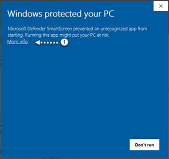
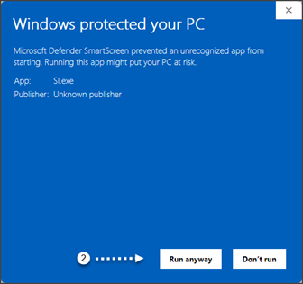
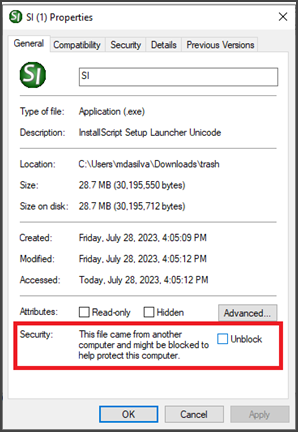

Windows/Microsoft Defender appears to cause issues during the installation of SpecsIntact, particularly with the executable SI.exe. This may also occur when launching the SpecsIntact Explorer (SpecsIntact.exe) or SI Editor (SIEditor.exe). Windows/Microsoft Defender might display warnings due to detecting behavior it deems suspicious or identifying an application as unsafe. These false positive alerts occur when these SpecsIntact components are executed for the first time on an end-user's system that Windows/Microsoft Defender hasn't encountered before. This behavior is intermittent and does not affect all users.
To bypass these false positive alerts so you can install or run the SpecsIntact application, use the options provided below:



To avoid false positive warnings from Windows/Microsoft Defender while installing or running SpecsIntact components in the future, you can add an exclusion for the specific executable files (e.g., SI.exe, SpecsIntact.exe, or SIEditor.exe). Listing the exclusions in Windows/Microsoft Defender will prevent the antivirus from scanning or flagging these files in the future. This may require IT Administrator assistance.
Remember that while false positives can be frustrating, they're also part of the security measures that protect your system. Make sure your're confident in the legitimacy of the files before excluding or disabling your antivirus temporarily. Always exercise caution when dealing with potentially harmful files.
Users are encouraged to visit the SpecsIntact Website's Support & Help Center for access to all of our User Tools, including Web-Based Help (containing Troubleshooting, Frequently Asked Questions (FAQs), Technical Notes, and Known Problems), eLearning Modules (video tutorials), and printable Guides.
| CONTACT US: | ||
| 256.895.5505 | ||
| SpecsIntact@usace.army.mil | ||
| SpecsIntact.wbdg.org | ||